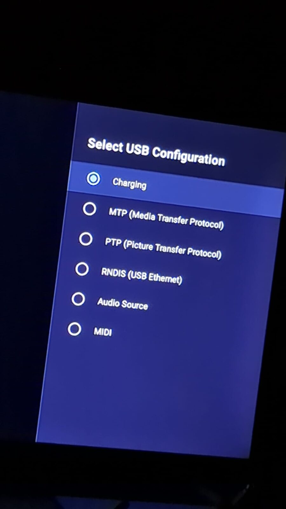

Giving an AI assistant access to my Android TV
Why I needed in
An app on my Mi Box S kept closing a few seconds after it opened. I wanted the crash logs so an AI assistant could read them and find the fault. On Android those logs sit behind ADB, the debug bridge, so first the assistant needed a safe way in.
The catch: debugging killed my network
My box gets its internet from a USB Ethernet adapter. On this box, turning USB debugging on made the wired network stop working. Every time I enabled it, the Ethernet connection dropped. No network, no remote access.
One setting, in the right order
The fix was a single setting changed in the right order. In Developer options I opened Select USB Configuration and picked RNDIS (USB Ethernet) before turning USB debugging on. With RNDIS selected first, the adapter stayed alive when I enabled debugging, and both ran at the same time.

Connecting, and the prompt you should not skip
From a computer on the same network I connected with adb connect and the box's IP address. The TV answered with an Allow USB debugging? prompt that shows the computer's RSA fingerprint. I compared it with my own computer's key, and only because it matched exactly did I tick Always allow from this computer. A fingerprint you do not recognize means another machine is asking, and the answer is cancel.
andreas@homelab:~$ adb connect 192.168.1.50:5555
connected to 192.168.1.50:5555
andreas@homelab:~$ adb shell getprop ro.build.version.release
9
andreas@homelab:~$ adb logcat -d
... the crash log, line by line
Illustrative commands with a placeholder IP, not a real capture.
What that access gives, and what it does not
ADB access is powerful, so treat it that way. This time we only ran read commands: asking the box which Android version it runs (9, in my case), listing network interfaces and reading the live system log that records why an app dies. But an authorized ADB session is not read-only. Within its permissions it can change settings, install or remove apps and control the device. It is not root, but it is real control, and that is exactly why the fingerprint check and the safety advice below matter. I connected over my own local network and my private VPN. ADB open to the public internet is an open door, so keep the port off it.
Safety advice if you try this
- Turn USB debugging off when you are done.
- Verify the fingerprint when you grant or re-grant access, and revoke debugging authorizations you no longer need. Developer options has a revoke option.
- Keep ADB on your own network, never the public internet.
What happened next
With the logs in hand, the assistant could read exactly why the app died instead of us guessing. The crash investigation is still running, so that part gets its own write-up when there is a verified answer. This one was about getting in the door safely.
Back to the blog